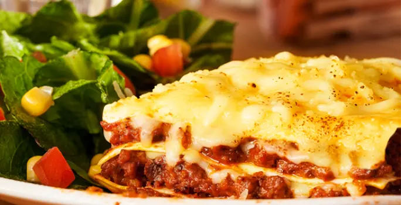

Lasaña de Carne

Prepara en casa la mejor Lasaña de carne
La mejor lasaña es la casera. No sé si os lo comenté alguna vez pero la lasaña es uno de mis platos de pasta preferido.
Este clásico de la cocina es famoso en todo el mundo, no sólo en Italia. Ideal para llevar en el taper al trabajo o al cole, y que sin duda triunfa entre los más pequeños de casa. No os paséis con la cantidad, con una porción es suficiente, una receta bastante completa y te da para superar un día lleno de energía.
Ingredientes
- 3 1/2 libras de carne de res molida
- 2 cucharaditas de ajo en polvo Ajo en polvo
- 2 cucharadas de Caldo de Carne de Res MAGGI®
- 1 cucharada de aceite vegetal
- 1/3 taza de cebolla cortada finamente
- 3 dientes de ajo cortados finamente
- 1/2 taza de apio cortado finamente
- 1 sobre de Salsa De Tomate Bolognesa MAGGI®
- 3/4 taza de agua
- 4 hojas de laurel
- 3/4 libra de pasta para lasaña cocida Pasta de lasaña precocida
- 2 tazas de queso mozzarella rallado
- Sal y pimienta al gusto
- 1 taza de queso parmesano
Pasos a seguir
- En un tazón, colocar la carne, el ajo en polvo, el Caldo de Carne de Res MAGGI® 2, la pimienta molida y marinar por 5 minutos.
- En una cacerola grande, colocar el aceite, la cebolla, el ajo, el apio y sofreír por 2 minutos.
- Añadir la carne y cocinar por 10 minutos revolviendo constantemente.
- Cuando la carne adquiera una tonalidad gris clara, a?adir la Salsa de Tomate MAGGI? estilo Bolo?esa, el agua, las hojas de laurel, la sal y pimienta y cocinar a fuego medio por 15 minutos.
- Armado de la lasaña: Al momento de montar la lasaña, untar con un poco de aceite un recipiente refractario o la bandeja que utilice. Colocar una pequeña cantidad de salsa, cubrir el fondo de la bandeja con lascas de pasta precocida, verter una cantidad pequeña de carne, añadir el queso mozzarella y una mínima parte de queso parmesano.
- Repetir este procedimiento hasta rellenar el recipiente. Finalmente, colocar una capa de pasta precocida, la salsa que haya quedado y cubrir con los quesos. La lasaña tiene que tener una buena cantidad de líquido para que la pasta se cocine. Si está muy seca, se le puede agregar caldo de pollo.
- Taparla con papel aluminio y llevar al horno a 150°C por 40 minutos.
- Paso adicional: A esta receta le puede agregar aceitunas negras y hojas de albahaca al momento de cocinar la carne.